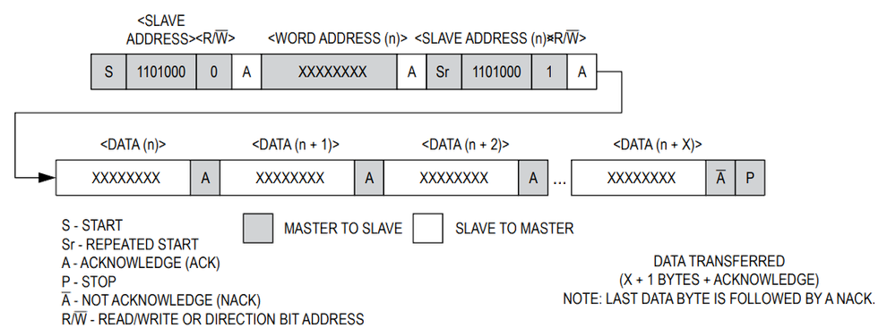

第三章——代码逻辑分析
1. BCD 和 DEC 转换
由于 DS3231 的时间寄存器和闹钟寄存器使用了 BCD 编码格式，因此，在正式编写程序之前，我们要学会BCD 和 DEC 的相互转换。比如，用户输入的肯定是十进制数，我们要将其转换成 BCD 格式才能写入寄存器；我们从寄存器读取的是 BCD 格式，需要将其转换成 DEC 才能进行输出。
下面是 BCD 和 DEC 相互转换的代码，这里大家看一下，不做详细讲解：
uint8_t bcd2dec(uint8_t bcd) {
uint8_t ones = bcd % 0x10;
uint8_t tens = bcd / 0x10;
uint8_t dec = ones + tens * 10;
return dec;
}
uint8_t dec2bcd(uint8_t dec) {
uint8_t ones = dec % 10;
uint8_t tens = dec / 10;
uint8_t bcd = ones + tens * 0x10;
return bcd;
}
2. I2C 基本的读写操作
根据经验，在任何通信过程中，我们需要完成以下三个函数：
void write_cmd(uint8_t cmd);
void write_data(uint8_t data);
uint8_t read_data(uint8_t data);
由于在 DS3231 中，写入的时候没有数据和命令的区分，因此我们统一认为写入的是数据，因此我们只需要完成两个函数：
void write_data(uint8_t data);
uint8_t read_data(uint8_t data);
同时，因为 DS3231 支持一次性写入读取多个字节的数据，因此，我们可以把上述两个函数扩展成以下四个：
void write_data(uint8_t data);
void write_data(uint8_t* data, uint8_t length);
uint8_t read_data(uint8_t data);
void read_data(uint8_t* data, uint8_t length);
然后根据 Arduino 的 Wire 库的使用方法，我们可以将上述函数补全：
void write_data(uint8_t data) {
Wire.beginTransmission(DS3231_ADDRESS);
Wire.write(data);
Wire.endTransmission();
}
void write_data(uint8_t *data, uint8_t length) {
Wire.beginTransmission(DS3231_ADDRESS);
Wire.write(data, length);
Wire.endTransmission();
}
uint8_t read_data() {
Wire.requestFrom(DS3231_ADDRESS, 1);
return Wire.read();
}
void read_data(uint8_t* data, uint8_t length) {
Wire.requestFrom(DS3231_ADDRESS, length);
for (uint8_t i = 0; i < length; i++) {
data[i] = Wire.read();
}
}
3. 读/写一个数据
在完成整个代码前，我们先完成一个小目标，读取 DS3231 的温度。读取数据的时候，我们只读取温度的整数位，忽略其小数位，也就是只从一个寄存器读取一个字节的数据。这样的话，读取温度就比较简单直接了。
3.1 读取温度

参照 DS3231 读/写数据的时序图，可以发现，完成读操作我们需要完成以下几步：
首先，向 DS3231 发送一个写数据的请求，写入的数据为目标地址，即温度寄存器(0x11)，代码如下：
write_data(TEMPERATURE_ADDRESS);
然后我们就可以从 DS3231 读取返回的温度数据了，代码如下：
int8_t temperature = read_data();
DS3231 在只读取整数位，忽略小数位的情况下，温度的数据类型是int8_t。
这样我们就完成了通过寄存器，读取 DS3231 的温度数据。整合一下，读取温度的代码如下：
int8_t readTemp() {
write_data(TEMPERATURE_ADDRESS);
int8_t temperature = read_data();
return temperature;
}
3.2 读/写取秒数据
下面请大家尝试读取 DS3231 的秒数据。
参考代码如下：
uint8_t readSecond() {
write_data(SECOND_ADDRESS);
uint8_t second = bcd2dec(read_data());
return second;
}
是不是很简单，这里我们只需要将写入的数据改为秒寄存器地址(0x00)，将数据类型改为uint8_t，同时将读取的 BCD 数据转换成 DEC 格式就好了。
下面请大家尝试写入秒的数据。
参考代码如下：
void setSecond(uint8_t second) {
uint8_t data[] = {SECOND_ADDRESS, dec2bcd(second)};
write_data(data, 2);
}
这里我们写数据的时候，同样可以连续写入。第一个是秒的地址，第二个是秒的数据，但是要注意把秒数据转换成 BCD 格式再写入。
4. 读/写指定长度的数据
上面我们完成了读/写秒的数据，也就是完成了读/写一个字节的数据，那我们是不是可以依葫芦画瓢完成读/写秒,分,时,日,月,年数据了呢。
这样是可以的，但是这么做显然不够高效。因为在这个过程中，我们每次读写数据都重复做了发送开始信号，发送结束信号这两件事，对于读写 7 个字节可能是比较容易，但是如果发送很多数据，这么做就会很浪费时间。
借助 DS3231 提供了连续读写功能，我们可以简化这个过程。
不过在完成这个连续读写的任务前，我们还需要做一件事，就是定义一个结构体。使用结构体可以大大简化操作。
需要定义的结构体如下：
struct Time {
uint16_t year; //年
uint8_t mon; //月
uint8_t date; //日
uint8_t hour; //时
uint8_t min; //分
uint8_t sec; //秒
uint8_t day; //星期
};
然后我们就可以完成连续写的任务了：
void setTime(Time now) {
// 记得写入数据前先将DEC数据转换成BCD格式
uint8_t data[] = {
SECOND_ADDRESS,
dec2bcd(now.sec),
dec2bcd(now.min),
dec2bcd(now.hour),
dec2bcd(now.day),
dec2bcd(now.date),
dec2bcd(now.mon),
dec2bcd(now.year % 100),
};
write_data(data, 8);
}
然后是连续读的任务：
Time readTime() {
Time now;
uint8_t data[7];
write_data(SECOND_ADDRESS);
read_data(data, 7);
// 读取后的数据需要转换格式
now.sec = bcd2dec(data[0]);
now.min = bcd2dec(data[1]);
now.hour = bcd2dec(data[2]);
now.day = bcd2dec(data[3]);
now.date = bcd2dec(data[4]);
now.mon = bcd2dec(data[5]);
now.year = bcd2dec(data[6]) + 2000;
return now;
}
完成了读写时间和温度，在 DS3231 上，我们其实还有一个功能没有使用，那就是闹钟。除了闹钟，还有输出方波，使用中断等等，我认为不需要全部都会使用。能够读取时间就可以了。
因此，这里我将不再详介绍如何设置闹钟，读取闹钟状态，以及关闭闹钟等，完整代码在下一章。